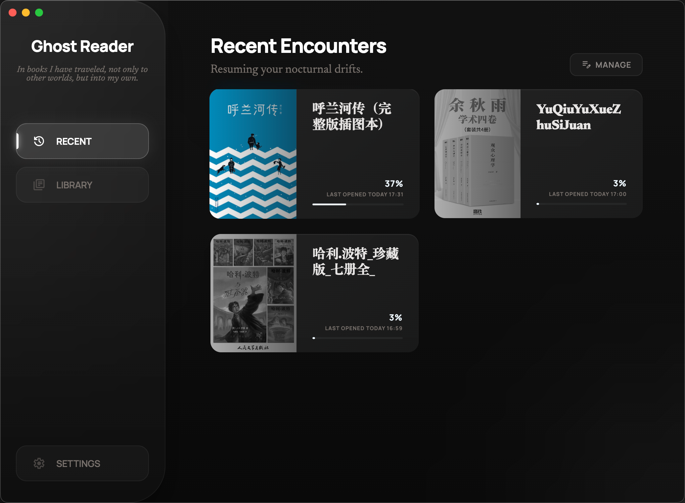
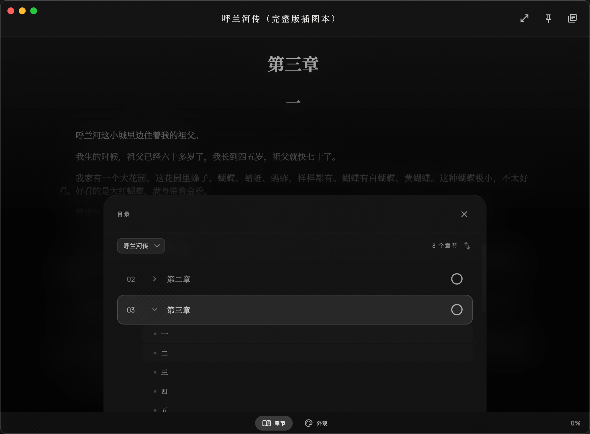

The Art of Digital Archiving.
An immersive sanctuary for your local library. Carved from Obsidian, whispered in glass.

The Curator's Home
Organize your collection in a library built for focus. A minimalist grid layout that highlights cover art and reading progress.

Immersive Reader
Zero interface, pure story. Typography that adapts to your environment and a distraction-free mode carved from digital obsidian.
Ready to Ghost Read?
Join thousands of curators who have found their digital sanctuary.
Get Ghost Reader for FreeLooking for older versions? Browse all releases →